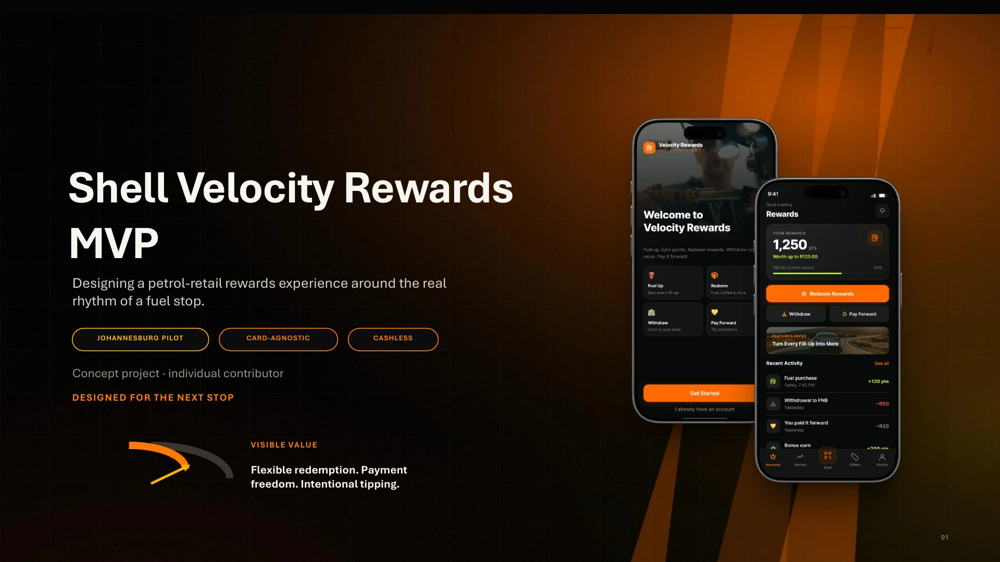

01
← Selected work
VELOCITY REWARDS MVP · PRODUCT STRATEGY CONCEPT
Make loyalty value visible, flexible and worth returning for.
A self-directed concept for a digital fuel-retail rewards experience. The work explores how customers could see what they earn, choose how to use it, pay with the method they prefer and thank fuel attendants without slowing down a fuel stop.
6loyalty models reviewed in the detailed audit
4MVP behaviours prioritised
1connected fuel-stop journey
THE PROBLEM
Card-bound rewards can be difficult to see and use, while customers lack a simple digital way to tip fuel attendants within the same loyalty experience.
MY PROCESS
Competitor and market audit → behavioural hypotheses → customer needs synthesis → MVP hypotheses → product trade-offs → journey and interface exploration.
MY ROLE & COLLABORATION
Individual, self-directed concept work. I led the research audit, developed hypothesis archetypes, defined the MVP scope and translated the product principles into flows and interface concepts. No Shell stakeholder or customer validation took place.
SUCCESS & STATUS
Repeat engagement is the proposed primary measure, supported by sign-up and redemption signals. These are proposed measures only; the concept has not been piloted and no product impact has been measured.
Explore the full case study and supporting detail
VELOCITY REWARDS MVP01 / 22
Scroll or swipe through the slides. Use the arrows to move one slide at a time. On smaller screens, open a slide to zoom in.
Scope and evidence
Back to selected work ↑This is a self-directed concept informed by a competitor and market audit. The archetypes are hypotheses, not interview-based personas. The concept and proposed success measures require customer, commercial and station-operations validation.